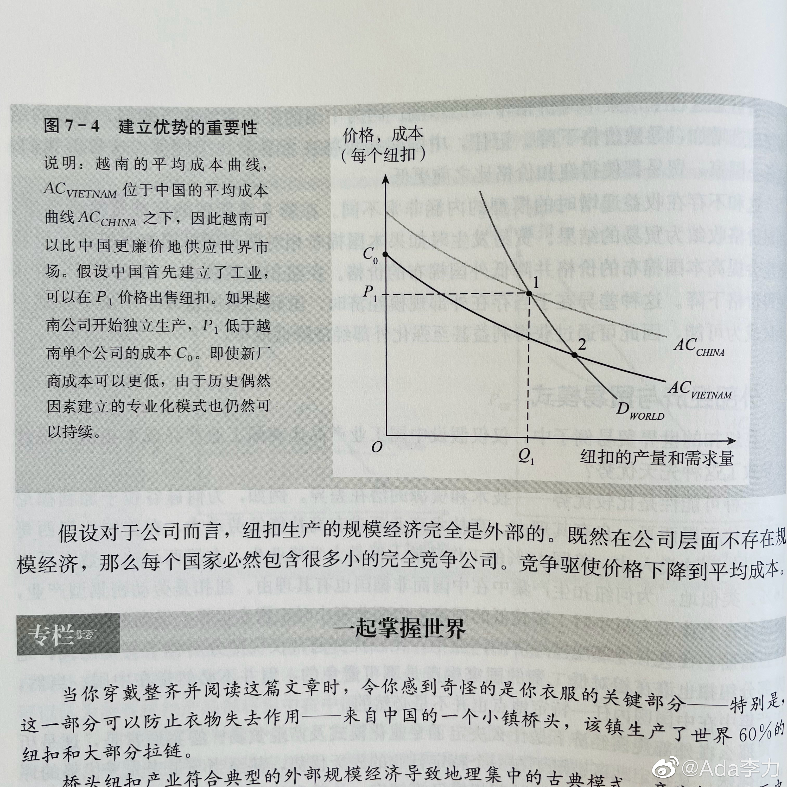

#一个人的企业#
中国的外贸企业很多跑到东南亚去建厂，因为那里的劳动力和土地都更便宜。所以一直存在这样的问题，东南亚会不会抢走中国制世界制造工厂的地位？
《国际贸易》用了个图表说明即使越南工厂生产纽扣，比中国工厂生产纽扣成本低，越南也不是那么容易取代中国，成为纽扣的世界工厂。
这里面关键因素是纽扣这种行业是规模经济的，也就是说你规模越大，单个产品成本会越低。中国最早开始生产而且掌控了这个行业，那么它就有优势，可以继续扩大规模，而且造成自己的成本会更低。当成本低到，越南发现自己生产纽扣无利可图时，越南这个行业就再也无法跟中国竞争了。
再往前想一想，规模经济也有个短板，就是需求不可能无限增长。如果强行还要上规模扩大生产，最后只会是这样的结果，利润减少，自己的福利受损。
这下比较清楚了，之前国家为什么要砍供应端，因为不限制规模的话，有些行业生产越多，整体越亏。
--《国际贸易》学习笔记
中国的外贸企业很多跑到东南亚去建厂，因为那里的劳动力和土地都更便宜。所以一直存在这样的问题，东南亚会不会抢走中国制世界制造工厂的地位？
《国际贸易》用了个图表说明即使越南工厂生产纽扣，比中国工厂生产纽扣成本低，越南也不是那么容易取代中国，成为纽扣的世界工厂。
这里面关键因素是纽扣这种行业是规模经济的，也就是说你规模越大，单个产品成本会越低。中国最早开始生产而且掌控了这个行业，那么它就有优势，可以继续扩大规模，而且造成自己的成本会更低。当成本低到，越南发现自己生产纽扣无利可图时，越南这个行业就再也无法跟中国竞争了。
再往前想一想，规模经济也有个短板，就是需求不可能无限增长。如果强行还要上规模扩大生产，最后只会是这样的结果，利润减少，自己的福利受损。
这下比较清楚了，之前国家为什么要砍供应端，因为不限制规模的话，有些行业生产越多，整体越亏。
--《国际贸易》学习笔记
- 